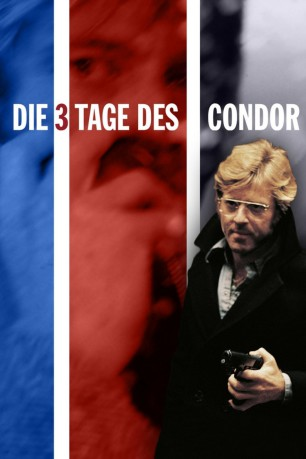

#3993 Die Drei Tage des Condor
Alternativ: Three Days of the Condor
Auszeichnungen: für 1 Oscars nominiert
 
 IMDB-Wertung: 7.5 / 10
IMDB-Wertung: 7.5 / 10  Metascore: 0
Metascore: 0 
Das Gebäude der "Amerikanischen Gesellschaft für Literaturgeschichte" wird von Männern gestürmt, die ein Blutbad anrichten. Turner entkommt zufällig. Er setzt sich mit dem CIA, in dessen Dienst die Abteilung arbeitete, in Verbindung. Als öffentlich gesuchter Mörder verfolgt, verbirgt sich Turner, Deckname "Condor", bei der entfernten Freundin Kathy, die nach einem weiteren Attentat mit Turner gemeinsame Sache macht. Er gelangt an Dokumente, die die Wahrheit enthüllen, und kann sich mit Hilfe der Presse absetzen.
Jahr: 1975
Dauer: 117 Minuten
FSK: 16
Land: USA Studio: Paramount A Gulf + Western CompanyTonspuren:
Untertitel: Deutsch, Englisch,
Auflösung: 1080p (1920x802) Größe: 13824 MB
Genre: Thriller, Mystery
Regisseur:  Sydney Pollack
Sydney Pollack
Drehbuch: Sadayuki Murai
Soundtrack:
Darsteller:
 Robert Redford als Joseph Turner
Robert Redford als Joseph Turner Faye Dunaway als Kathy Hale
Faye Dunaway als Kathy Hale Cliff Robertson als J. Higgins
Cliff Robertson als J. Higgins Max von Sydow als G. Joubert
Max von Sydow als G. Joubert John Houseman als Mr. Wabash
John Houseman als Mr. Wabash- Addison Powell als Leonard Atwood
- Tina Chen als Janice Chong
- Patrick Gorman als Martin
- Hansford Rowe als Jennings , as Hansford Rolle
- Carlin Glynn als Mae Barber
 Hank Garrett als Mailman
Hank Garrett als Mailman- John Connell als TV Reporter
 James Keane als Store Clerk
James Keane als Store Clerk- Ed Setrakian als Customer
 Myron Natwick als Civilian
Myron Natwick als Civilian Ernest Harden Jr. als Teenager
Ernest Harden Jr. als Teenager Sean Collins als Cia Agent , uncredited
Sean Collins als Cia Agent , uncredited Russell Johnson als Intelligence Officer at Briefing , uncredited
Russell Johnson als Intelligence Officer at Briefing , uncredited- Walter McGinn als Sam Barber
- Michael Kane als S.W. Wicks
- Don McHenry als Dr. Ferdinand Lappe
- Michael B. Miller als Fowler
- Jess Osuna als The Major
- Dino Narizzano als Harold
- Helen Stenborg als Mrs. Edwina Russell
- Arthur French als Messenger
- Jay Devlin als Tall Thin Man
- Frank Savino als Jimmy
- Robert Phalen als Newberry
- John Randolph Jones als Beefy Man
- Garrison Phillips als Hutton
- Lee Steele als Heidegger
 Ed Crowley als Ordinance Man
Ed Crowley als Ordinance Man- Norman Bush als Alice Lieutenant
- Michael Prince als Civilian
- Carol Gustafson als Landlady
- Sal Schillizzi als Locksmith
- Harmon William als CIA Agent
- David Bowman als Telephone Worker
- Eileen Gordon als CIA Receptionist
- Robert Dahdah als Santa Claus
- Steve Bonino als Kid
- Jennifer Rose als Kid
- David Allen als Kid
- Glenn Ferguson als Kid
- Paul Dwyer als Kid
- Marian Swan als Nurse
- Dorothi Fox als Nurse
- Beverly Goodman als Girl , uncredited
- Bruce Moreno als Computer Operator , uncredited
Datei: X:\1975\Drei Tage des Condor, Die (1975, FSK16, 1920x802).mkv seit 11.07.2016
Festplatte: HD 1971-1979
 Es gibt insgesamt 27 Filme in der Gruppe '1975'
Es gibt insgesamt 27 Filme in der Gruppe '1975'